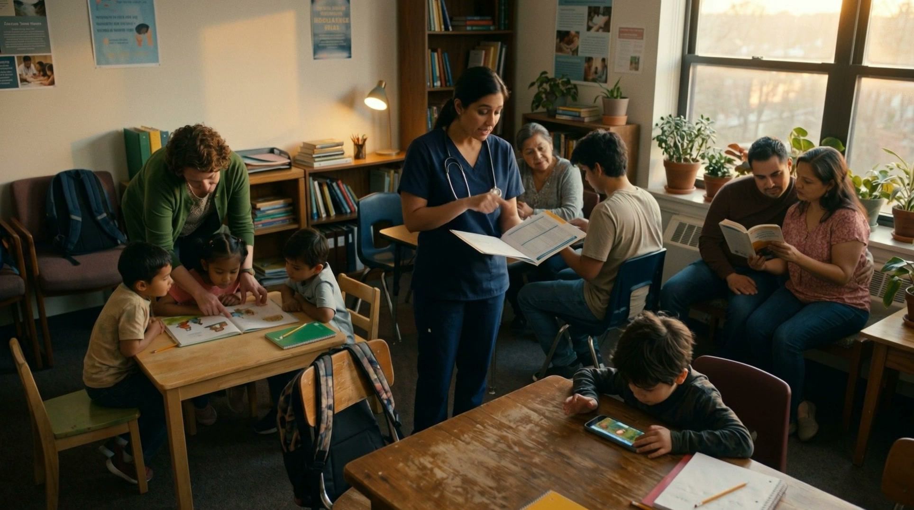

What a Library Remembers
How archives decide what survives — and what that means for the stories we tell about the past.
Researchers and thinkers, talking the way real people talk — no jargon required. New episodes twice a month.
Prototype episodes — players are illustrative for now.
How archives decide what survives — and what that means for the stories we tell about the past.

From Greek physicians to Arabic scholars — the long road to modern healthcare.
When machines read everything, who decides what counts as knowledge?
Why some books, ideas, and names get remembered — and so many others don't.
What gets lost — and found — when research crosses languages and borders.
Subscribe and the newest conversation lands in your feed automatically.
Subscribe on your app →